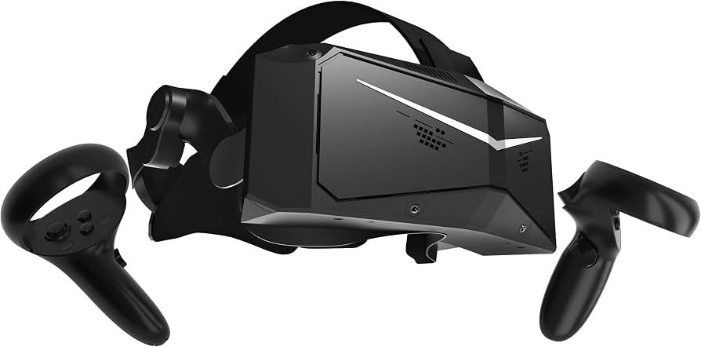

Pimax Crystal Light Review

The Pimax Crystal Light with controllers retails at $899 USD. It was released in 2024. It offers QLED displays with 2880x2880 pixels per eye. It uses glass aspherical lenses.
I bought this headset when it first came out, and I had all sorts of issues with it.
The cord that you plug into your computer was all wound up and bent out of shape. This wouldn't be a problem if it was a charger. However, this headset is ran by an external computer. It is merely a display and interface. You must remain tethered to your computer. I had a VR cable management setup in my room with pulleys for this purpose. However, the cable was so bent up that it would wrap around awkwardly. It was a hassle.
I had all sorts of issues when setting it up. Really bad stuttering occasionally. Bad halos around text. My controllers would lose tracking if I put my arms out to my sides.
My microphone was peaking all the time. I had a permanent funny mic. I had no idea until a few weeks in when some poor soul jokingly complimented my horrible microphone in VRChat.
From what I've heard, Pimax is notorious for stuff like this. With what sounds like amazing specs on paper, but completely let down by poor quality control and buggy software.
Just don't buy this. I returned mine.